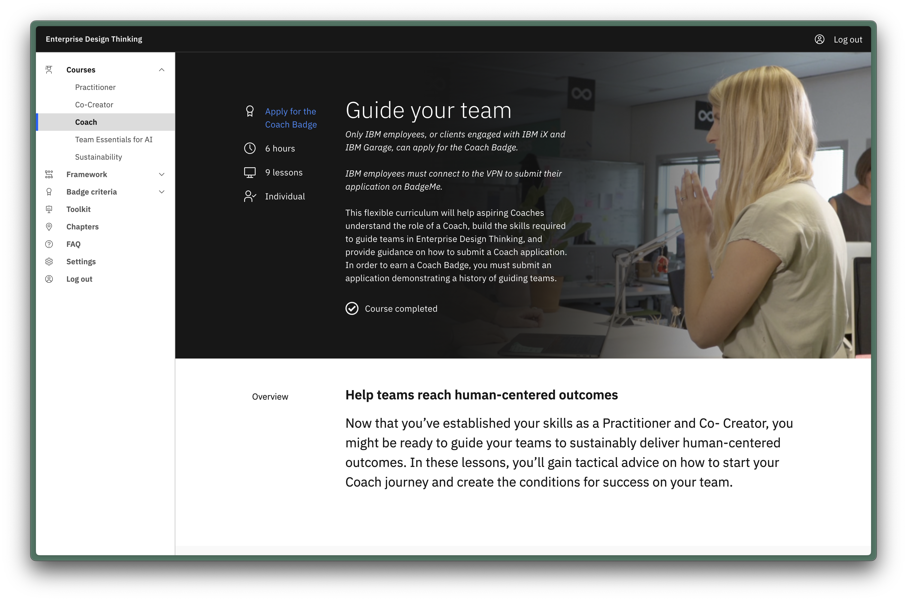
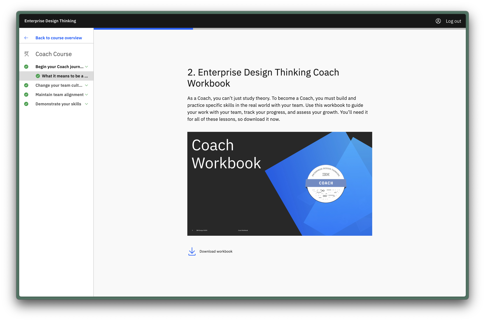

Scaling enterprise design thinking with coaches
Role: Education designer and review board lead
Jan 2020 - current

Teams that consistently deliver quality products and meet user
needs are considered 'unicorns' in the tech industry. At IBM, a
framework of design thinking is one of the key ingredients of such
teams, and design thinking coaches are the people who guide teams
towards excellence. But how can a business with more than 350,000
employees and hundreds of products scale quality coaches?
In this project, I worked with two designers to enabl emerging design thinking coaches through access to education, mentorship, and opportunities to practice coaching. Coaches now represent a more diverse number of locations, languages, and disciplines at IBM. The community is scaling while maintaining a high standard.
In this project, I worked with two designers to enabl emerging design thinking coaches through access to education, mentorship, and opportunities to practice coaching. Coaches now represent a more diverse number of locations, languages, and disciplines at IBM. The community is scaling while maintaining a high standard.
Over the course of a year, I wore many hats on this project: I
conducted research on emerging, delayed, and model coaches. I
managed media and content production, created working prototypes,
and helped manage our sponsor user pilot programs. Today, I lead
the global coach review board, a group of highly experienced
design thinkers from 24 countries.
Though we had 550 coaches in over 24 countries, we knew that 43%
were in the United States—and many of those coaches were also from
a design background. We knew there were many corners of IBM where
we could drive human-centered outcomes if we created coaches in
those areas (i.e. in India where IBM was rapidly growing its
workforce). We recognized that there was some low-hanging fruit we
could solve with some basic logistics and expectation-setting.
More importantly, we needed to provide longitudinal training and
clearly articulate the value of becoming a coach. Or, as I like to
call it, the 'WIIFM'— What's In It For Me. We could also provide
structure, chunking down the development of skills into manageable
portions. And we could provide tactical guidance such as
real-world strategies for tricky situations.
After researching our users and developing an initial curriculum,
I hosted two in-person workshops. This provided the curriculum
team with a testing ground and jumpstarted 40 design thinkers
towards the path of becoming a coach. From the feedback we
received, it was clear participants wanted deeper content and more
of it. We then moved to a seven-week, virtual course to dive into
deeper content, while also testing if it was possible to scale the
number of people who could deliver this course in the future.
Through a cohort model, we curated a sense of
community—participants advised each other, reviewed applications,
and even posted coaching opportunities. We also learned that the
size of the cohort dramatically impacted the engagement; 12 worked
great, 20 not-so-much.
The cohort model, while effective, was not scalable, so we took
the deep content we had developed—and our many lessons-learned—and
developed scalable online content. We focused on providing
guidance, real-world case studies, and templates for documenting
small-wins and showing iteration. This meant we had a few
different types of content such as a workbook, case-study videos,
small-wins, and more. “Today, I have enrolled in this course and
while going through the first module, I realized, these lessons
can be applied to any work that involves more than 2-3 people! I
can use these pointers in my day-to-day work where I have to deal
with multiple teams. I plan to apply these skills in my work and
then apply for this badge! Kudos to the team for finally giving us
a simple yet practical program!” - Emerging CoachWe evaluated
success through interviews and surveys—and by comparing applicants
who took the course versus those who did not.There was an
improvement, but not as much as we wanted. So we returned to our
research and doubled down on a fact we'd been dancing around: the
most successful applicants had a mentor to provide guidance or a
sponsor to give them coaching opportunities.In response, we
rapidly prototyped a platform to connect emerging coaches with
mentors and to consolidate opportunities. This MVP was rolled out
to 70 emerging coaches in a pilot program that was highly
successful. We are steadily developing a stream of high quality
applicants from additional countries and backgrounds.

Today, I'm the lead of coach review board, a group of EDT coaches
from 24 countries who evaluate coach applications and provide
feedback. My journey to get to this point took about two years.I
started small, volunteering for low-stakes facilitation
opportunities, like leading IBM's new hires through their first
two-day-experience of design thinking. I gathered feedback from
these sessions to reflect and improve.
Next, I volunteered to be a scribe for a higher-stakes engagement, the Future of Design Education Work Group. This group of high-profile academics, educators, and industry designers needed help learning to collaborate in a remote setting, so I took the time to teach them Mural and helped facilitate their early sessions.Along the way, there were many small moments of coaching on my own team, but I felt that because we were all in the design thinking scene, I needed to find a challenge.
I volunteered to coach for three intensive programs: IBM's summer internship program, a new hire design training program, and a developer training program. After this experience, I had the eminence to begin leading design thinking initiatives on my as a guest facilitator for various product teams.
Now at IBM my focus is on supporting the review board and ensuring that applicants continue to feel supported with resources and mentors.
Next, I volunteered to be a scribe for a higher-stakes engagement, the Future of Design Education Work Group. This group of high-profile academics, educators, and industry designers needed help learning to collaborate in a remote setting, so I took the time to teach them Mural and helped facilitate their early sessions.Along the way, there were many small moments of coaching on my own team, but I felt that because we were all in the design thinking scene, I needed to find a challenge.
I volunteered to coach for three intensive programs: IBM's summer internship program, a new hire design training program, and a developer training program. After this experience, I had the eminence to begin leading design thinking initiatives on my as a guest facilitator for various product teams.
Now at IBM my focus is on supporting the review board and ensuring that applicants continue to feel supported with resources and mentors.